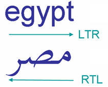
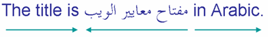
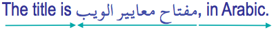
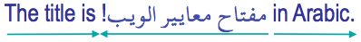
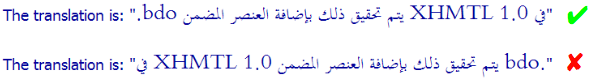
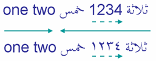

Bidi算法基础知识
字符和定向打字
我们已经知道，一系列拉丁字符是从左到右一个接一个地渲染（即显示）的（我们可以在当前阅读的文本中看到）。另一方面，比迪算法会从右到左一个接一个地渲染阿拉伯或希伯来字符序列。

您的浏览器如何知道这是从左到右还是从右到左的字符序列？因为Unicode中的每个字符都有一个关联的方向属性。大多数字母都以LTR（从左到右）强类型输入。从右到左脚本的字母被强类型输入为RTL（从右到左）。
从右到左将显示一系列强类型的RTL字符。这与周围的基本方向无关。
定向跑
当将具有不同方向性的文本内联混合时，bidi算法会针对具有相同方向性的连续字符的每个序列生成单独的方向性偏斜。
因此，在以下示例中，存在三个定向运行：
请注意，您不需要任何标记或样式即可实现此目的。
基本方向，一个根本重要的概念
文本的显示顺序取决于分配给短语，段落或包含文本的段落的基本方向。基本方向是一个根本上重要的概念。它确定双向文本所指向的方向性上下文，以决定如何处理文本。
在HTML中，基本方向是由使用该dir属性的最接近的父元素显式设置的，或者在没有任何此类属性的情况下，其基本方向是从文档的默认方向继承的，即从左到右。
这是重要的一点：定向运行在页面上的显示顺序取决于当前的基本方向。
在上面的示例中，总体上下文（即基本方向）为ltr，您将读为“巴林”，然后为“ مصر ”，然后为“科威特”。

如果在上面通过指定的方向改变的示例的上下文定向html元件或父元素，例如div，p或span元件，是rtl，你将改变方向运行的顺序。
两种情况下的字符都以完全相同的顺序存储在内存中，但是方向行的视觉顺序在显示时是相反的。
中性字符
空格和标点符号在Unicode中不是强类型为LTR或RTL，因为它们可以在两种类型的脚本中使用。因此，它们被归类为中立或薄弱的角色。
与数字关联的字符通常被归类为“弱”。少数标点符号起初被归类为弱标，但在非数字上下文中被视为中性。因此，在本文中，我们将所有标点符号都称为中性字符。
这是事情开始变得有趣的地方。当比迪算法遇到具有中性方向属性（例如空格和标点符号）的字符时，它会通过查看周围的字符来确定如何处理它们。
具有相同方向类型的两个强类型字符之间的中性字符也将假定该方向性。因此，两个RTL字符之间的中性字符将被视为RTL字符本身，并将具有扩展定向运行的效果。这就是为什么以下示例中的三个阿拉伯语单词作为一个方向游标从右向左读取的原因- 包括两个中间空格，这些空格作为中性符接周围字符的方向。（箭头显示阅读顺序。）

即使两个强类型字符之间有多个中性字符，也将以相同的方式对待它们。
请注意，您仍然不需要任何标记或样式。而且这里仍然只有三个定向滑道。
但是，当空格或标点符号落在两个具有不同方向性的强类型字符（即）之间时，会发生什么。在定向运行之间的边界？在这种情况下，中性字符（或多个字符）将被视为与主流基准方向具有相同的方向性。
因此，例如，如果在上面的示例中，在最后一个阿拉伯字符之后添加逗号，它将被视为LTR（基本方向的方向），因此将显示在阿拉伯文本的右侧，即。作为右侧定向运行的一部分。

到目前为止，还不错，但这并不总是对我们有利，但是，正如我们接下来将要看到的。
将更改嵌入基本方向
如果在上一个示例中，阿拉伯语的标题实际上以感叹号结尾，那么我们希望它出现在阿拉伯语文本的左边缘。

不幸的是，默认情况下看起来不会像那样。感叹号将像逗号一样对待，并最终出现在同一位置，即。阿拉伯标题的右侧。
要纠正此问题，我们需要将阿拉伯文字的基本方向加上感叹号定义为从右到左。然后，感叹号将采用从右到左的方向，并被视为阿拉伯文本的延续。
您正在使用的标记语言或应用程序应提供允许您执行此操作的机制（例如，使用HTML元素dir上的属性q）。我们将在下面的超越比迪算法中对此进行更多讨论。
在某些情况下，不仅改变基本方向对于处理定向游标边界上的标点符号至关重要，而且确保嵌入式双向文本中定向游标的正确顺序也很重要。以下面的示例为例，其中第一行显示了预期的渲染，而第二行显示了仅使用bidi算法的默认处理。

此时，不必太担心这个含义：问题在于，在底行上，在不更改引用基本方向的情况下，引用内部的定向行是从左到右排序的。同样，解决问题的方法是重新定义报价的基本方向。
号码
关于数字的简短说明。RTL脚本中的数字在从右到左的流程中从左到右运行，但是bidi算法对它们的处理方式与单词稍有不同。据说它们的方向性较弱。图片中的两个示例说明了这种差异。

第一个示例使用欧洲数字'1234'，第二个示例使用阿拉伯语-印度数字١٢٣٤表示相同的数字。在这两种情况下，数字中的数字都是从左到右读取的。
因为它是弱类型的，所以数字被视为前面的阿拉伯文本的一部分，因此，围绕数字的两个阿拉伯词被视为同一定向行的一部分-即使数字序列在屏幕上以LTR运行。
还要注意，与数字一起，某些其他中性字符（例如货币符号）将被视为数字的一部分，而不是中性。在处理数字的方式上还有一些其他细微的差异，我们在这里不需要详细讨论。
镜像字符
您还会发现某些字符具有镜像形状，具体取决于找到它们的文本方向。
下面的示例在所有情况下都使用相同的尖括号字符，但是您看到它在从左到右的上下文中指向右侧，在从右到左的上下文中指向左侧。

有许多这样的字符，包括成对出现的许多字符，例如括号和方括号，还有一些单独出现的字符。不需要任何特殊的操作即可产生此行为。